로고 디자인
- Keyword
- 지역성과 연계성, 공공기관에 적합한 명확성, 직관적인 시각 전달
- Design Direction
- 신뢰, 안전, 체험, 공공성
- Result
- 수난체험센터의 특성과 기관 요청사항을 반영하여 신뢰성과 기능성을 모두 갖춘 시그니처 로고를 완성. 현재 기관의 공식 로고로 다양한 매체에 적용 중이며, 시각 정체성 구축에 기여.
- 로고 의미
- 전체를 감싸는 흰색 원은 실제 물이 존재하는 체험 공간으로서의 센터 역할을 상징하며 '공간의 수용성'을 시각화. 'ㅅ' 모양의 오브젝트는 구명보트 전면부 형상을 모티브로 해 구조와 안전을 의미하고, 컬러는 관할 소방기관인 충북안전체험관의 CI와 아이덴티티를 유지. 물을 형상화한 물결 모양은 수난체험센터의 특징인 실제 물 안에서의 체험 콘텐츠를 표현하며, 하늘색·파란색·초록색·청록색은 각각 센터·항공·육지·해상을 의미하는 4캐릭터의 대표 색상.
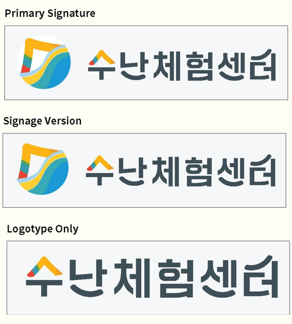
컬러 시스템
Main Color
Sub Color
로고 응용 · 세로형 & 사이니지 적용
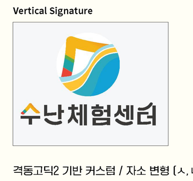
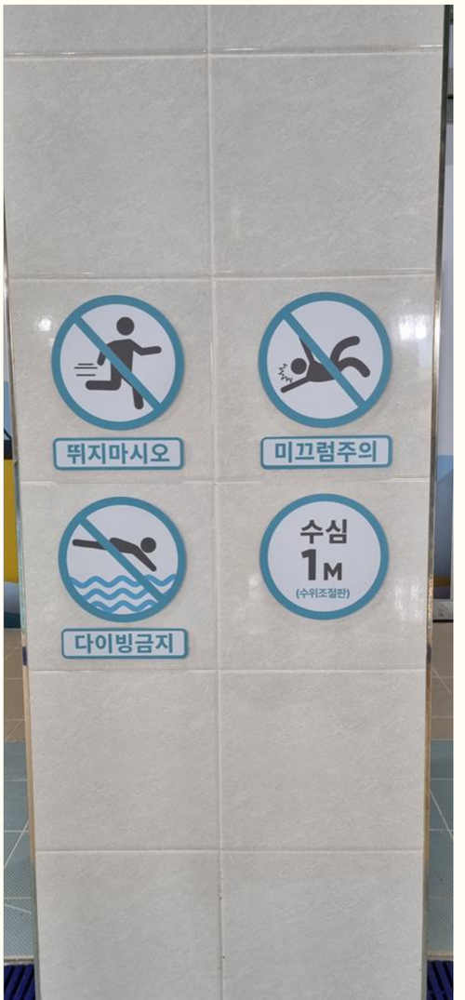
캐릭터 디자인
- Keyword
- 하늘, 땅, 바다, 물
- Design Direction
- 물의 형상을 모티브로 한, 어린이에게 친근한 캐릭터 디자인. 체험센터의 특성을 반영해 하늘·땅·바다의 요소를 형상화하고, 운영 주체인 119 소속임을 고려해 설계함.
- Result
- 센터의 웹 그래픽, 영상, Zep 등 다양한 콘텐츠에 활용.
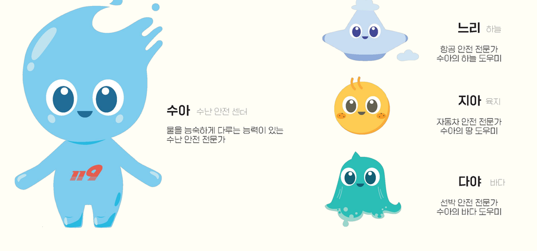
캐릭터 응용
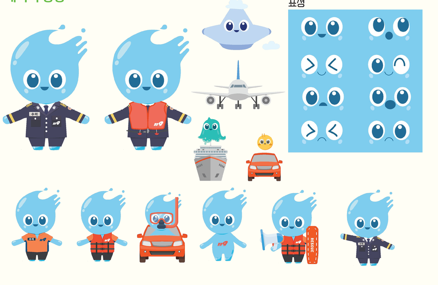
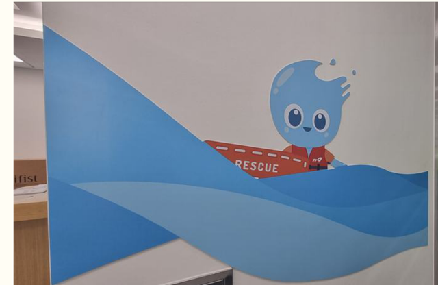
사이니지 디자인
체험 프로그램 5종 픽토그램과 시설 안내 사이니지 일체를 제작해 현장 동선 안내에 적용.
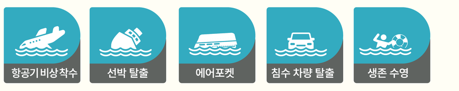
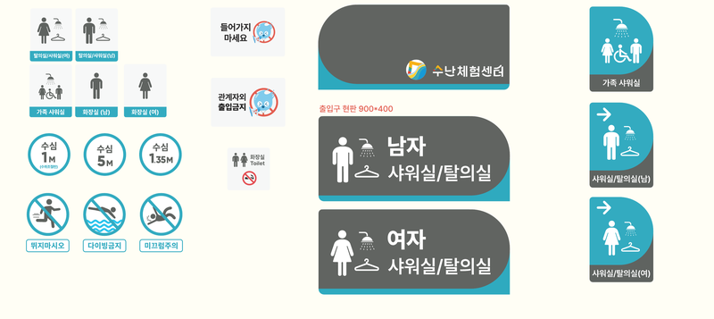
공간 그래픽 · 아트웍
탑승동 항공기 모형 랩핑 디자인과 로비 벽면 웰컴 월그래픽으로 체험 공간의 몰입감을 강화.
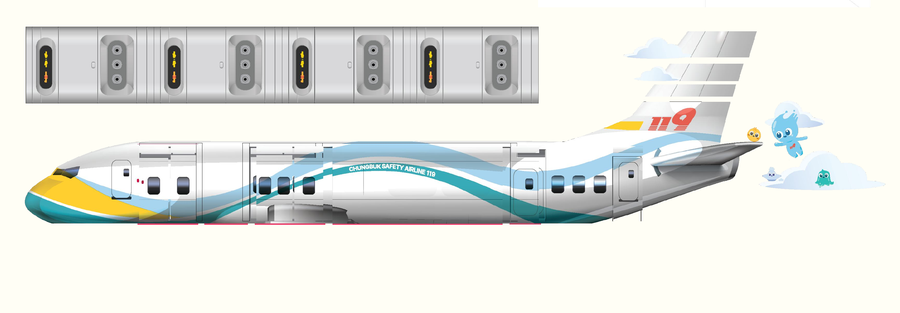
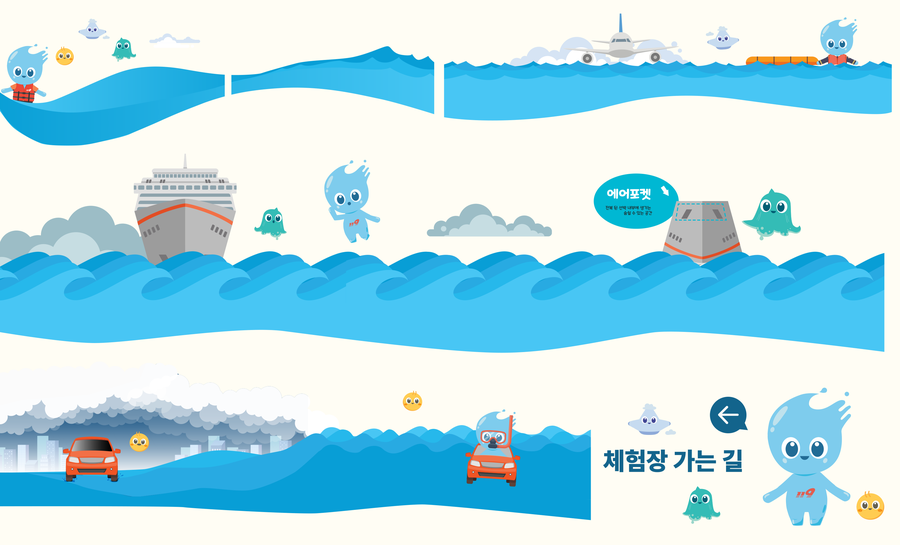
현장 사진
완공 후 체험장, 항공기 모형 내부, 로비 월그래픽이 실제 공간에 적용된 모습.
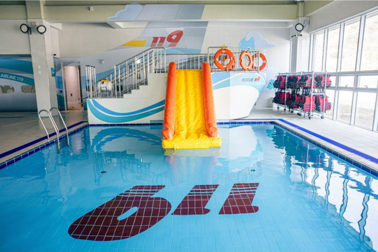
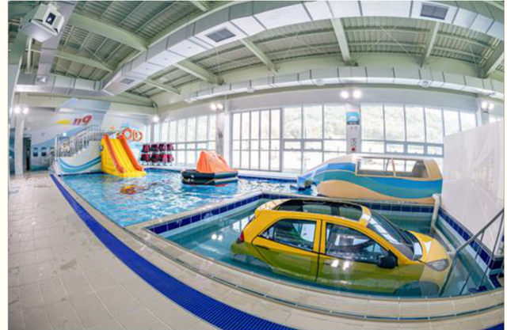
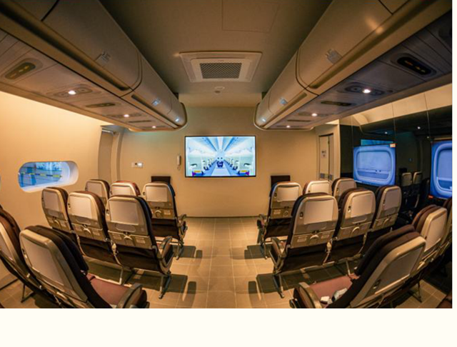
ZEP 가상공간 기획 · 그래픽 · 페이지 제작
- Keyword
- 체험 미리보기, 체험이 어려운 방문객을 위한 가상체험공간
- Design Direction
- 실제 체험센터의 구조를 기반으로 시각적으로 유사한 공간 그래픽을 제작하여 몰입감을 높임. ZEP의 가상공간 특성을 활용해 맵 이동에 따른 캐릭터와의 대화 등 상호작용 콘텐츠를 구성해 재미 요소를 추가. 체험 위주의 센터 특성상 부족했던 설명 요소를 캐릭터, 짧은 문구, 미니게임 등으로 대체하여 정보 전달과 재미를 동시에 만족시키는 방향으로 기획함.
- Result
- 체험 콘텐츠 설명, 사전 안내, 미니게임, 체험 영상, 홍보 영상 등 다양한 콘텐츠를 통합 구성. ZEP 페이지를 통해 체험 플랫폼으로 활용 중.
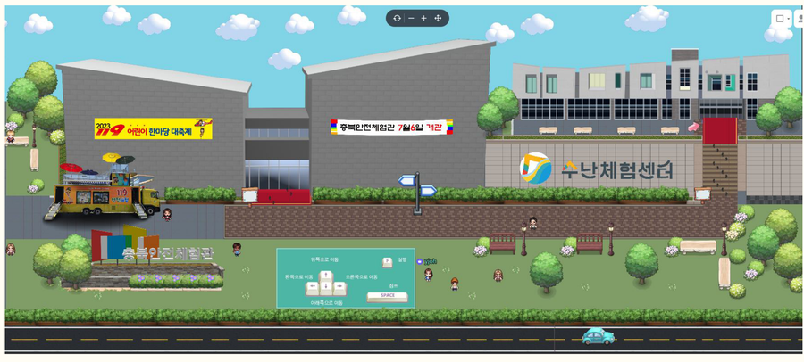
구현 이미지 · 공간 & 인터랙션
-
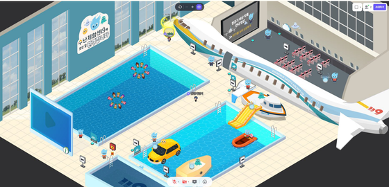
① 체험 풀 재현
실제 공간과 동일한 구조 -
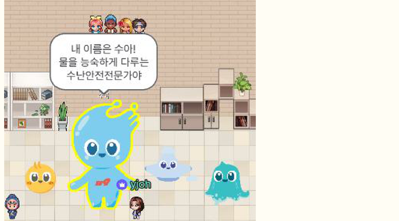
② 캐릭터 소개
수아와의 대화 -
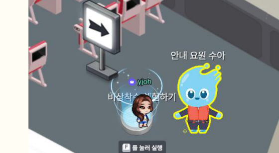
③ 안내 요원
프로그램 설명 인터랙션 -
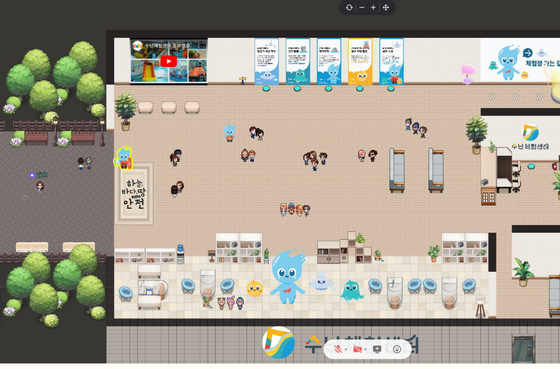
④ 로비 전체 맵
동선 재현 -
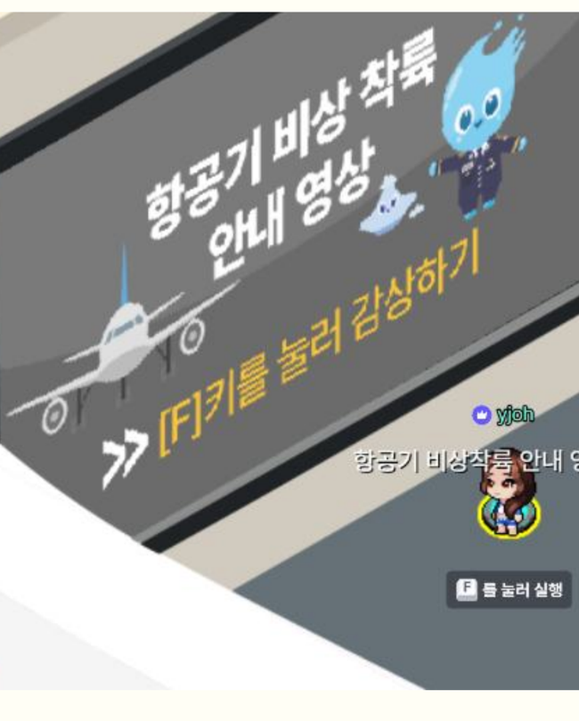
⑤ 안내 영상
F키를 눌러 감상하기 -
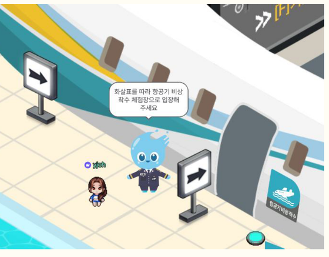
⑥ 이동 경로 안내
체험장 가는 길
맵 이동에 따라 캐릭터와의 대화·인터랙션이 트리거되도록 구성하여, 체험 위주 센터의 부족했던 설명 요소를 재미있게 보완.
구현 이미지 · 미니게임
-
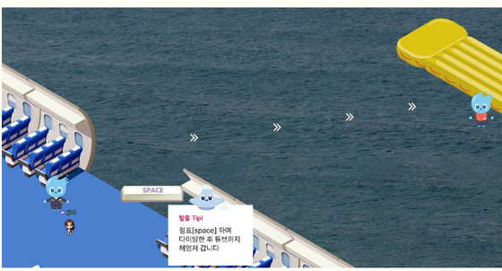
① 선박 탈출
슬라이드 미니게임 -
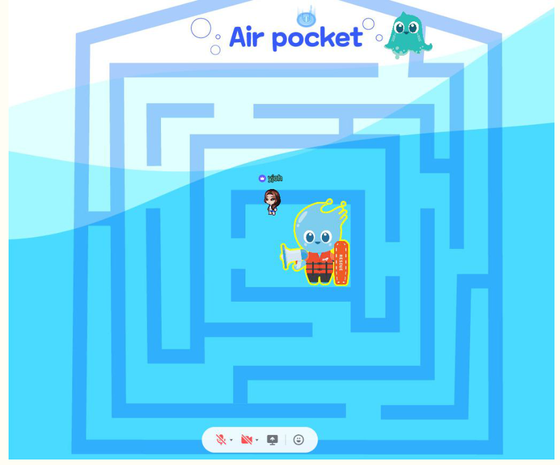
② 에어포켓
미로 탈출 미니게임 -
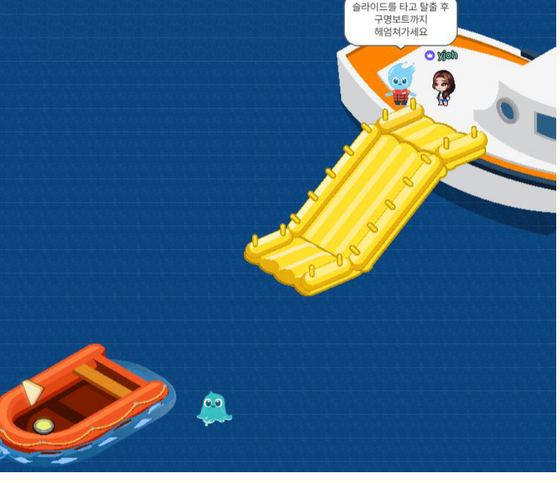
③ 구명보트
탈출 미니게임 -
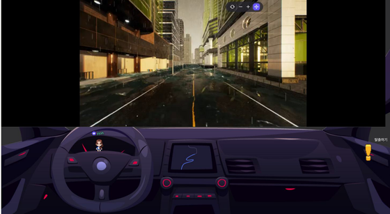
④ 침수 차량 탈출
1인칭 주행 시뮬레이션 -
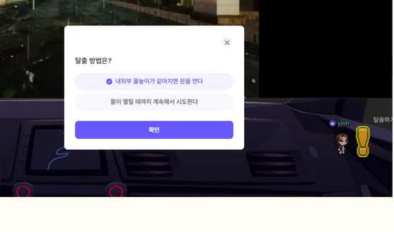
⑤ 탈출 방법 선택
퀴즈형 팝업
각 프로그램의 탈출·생존 원리를 미니게임으로 재구성해, 방문 전에도 체험 내용을 재미있게 예습할 수 있도록 구성.